|
ADO Den Haag - Roda JC (1-4) 23 april 2004 |
ADO Den
Haag - Roda JC (1-4) 23 april 2004
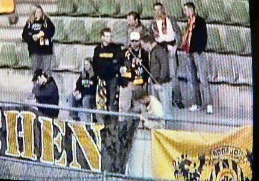
De meegereisde supporters.
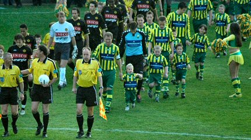
Warming-up bij opkomst door Haagse cheerleaders.
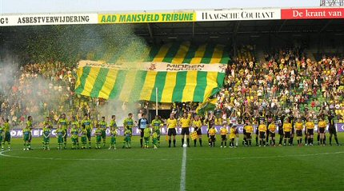
Groot vlagvertoon en confetti-kanon.
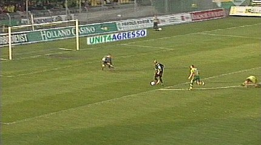
Roda krijgt veel kansen en in de 23e min. is het eindelijk raak. Arouna Kone
scoort 0-1.
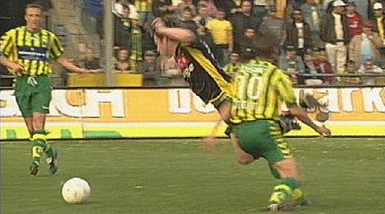
Van Dijk wordt flink onderuit geschoffeld. Het levert Roda een
vrije trap op.
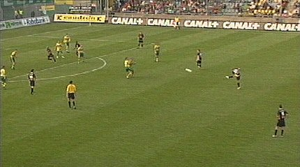
Deze wordt vanaf 35 meter door Bodnar in het doel gelanceerd:
0-2, (36').
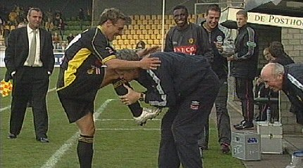
De excentrieke Hongaar laat zich hiervoor op eigenzinnige wijze
fêteren.
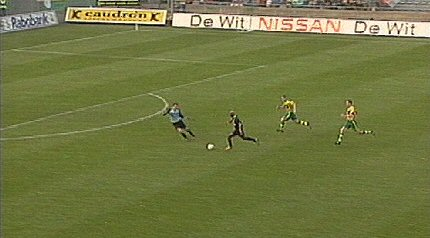
Kone maakt er nog voor de rust 0-3 van, (45').
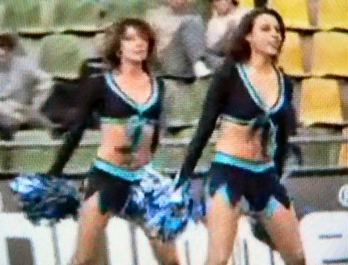
Dit willen we ook in Kerkrade zien i.p.v. de suffe pauze-act die
er nu is!
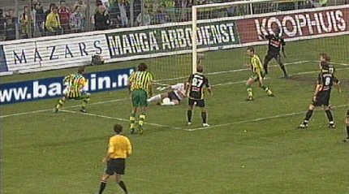
Roda is duidelijk beter, heeft meer balbezit en krijgt de beste
kansen. Veel
worden er gemist, maar ook ADO verprutst een half dozijn mogelijkheden.
Dat had voor een groot deel te maken met de uitmuntend keepende Kujovic.
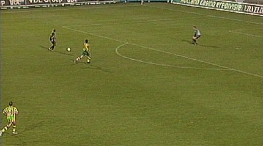
Kone op weg naar 0-4, (81').
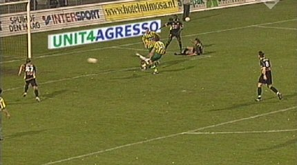
In de slotfase pikt ADO nog een rommelgoal mee. Verhoek scoort
1-4, (84').
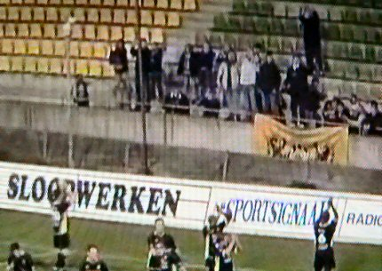
Eindstand 1-4. Roda bedankt de supporters.